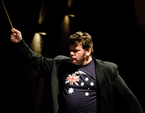
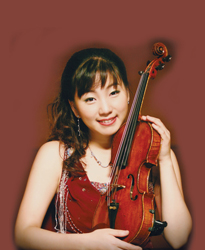

Artists List

Adam lopez (Vocal)
Adam Lopez’s exceptional vocal artistry has paved opportunities to perform backing vocals for some of the biggest names in the music industry such as Mariah Carey, Keith Urban and The Coors. His most recent noted collaboration was headlining with Australian Jazz legend James Morrison in a string of Symphonic Concerts in Perth, Hobart and Brisbane. Adam Lopez has undoubtedly got one of the most fascinating vocal instruments on the planet. He delighted audiences when he sang in Townsville with the Barrier Orchestra in 2012 along with Sean O’Boyle and James Morrison. |
Domenico Taraborrelli (Accordion)
Domenico is one of Brisbane’s most experienced and versatile multicultural entertainers. He has performed in almost every possible style since he commenced his musical career in 1971 at age 4. He studied music on the traditional European instrument called the Piano Accordion and this is still his chosen instrument, although he also now uses the latest electronic midi accordion which incorporates other built in instruments.
Domenico moved from three piece cabaret bands to a more sophisticated five piece band, the Latin Mafia which performs swing and Latin classics from the Rat Pack era.
He has performed in many venues from QPAC with the Queensland Pops Orchestra to being runners up with his Celtic Band, Murphy’s Pigs at the Tamworth Golden Fiddle Awards.


David Hudson (Musician, entertainer)
|
Raymond Young Conductor
aymond Yong was born in Malaysia, emigrating to Australia at the age of two. He received his initial musical training in Perth, performing regularly in public piano recitals from an early age. It was in High School that he forst took to the podium as a conductor, directing his school orchestra and choir. Raymond is also a sought-after piano soloist and accompanist. Concert highlights include Chamber Music performances at the Musica Viva, Huntington Festival, the Linari Classic in Italy, as well as piano concerto engagements with the Melbourne Symphony, the Sydney Symphony, West Australian and Tasmanian Symphony Orchestras. |


Jennifer Bradstreet (Flute)
|
Leah Li (Harp)
|


Richard McIntyre, OAM, BMus (University of Sydney) Conductor/Bassoonist
| |||
Mario Dobernig (Conductor)
|


Yosika Masuda (Cello)
|
 Stefan Cassomenos |
 Mark Shiell |
 James Morrison |
 Sean O'Boyle |
 Rebecca Chan |
 Blair Harris |
 David Lawrence |
 Ji Won Kim |
Life Member
Life Member since May 2015
|
|
|
Jacinta has been part of the Orchestra from the beginning when she played 1st Clarinet at the first performance on Sunday, 29th October 2000. |
| Alan Nixon |
Life Member since May 2015 |
|
Alan has been Secretary of North Queensland Ensembles Inc. /Barrier Reef Orchestra for eight years. |
| Stephen Frewen-Lord |
Life Member since May 2015 |
|
Stephen has been involved with the Barrier Reef Orchestra since its inception; having played as concert master in the orchestra’s inaugural concert in 2000. Since then, he has missed only a couple of Barrier Reef Orchestra concerts, and has been concert master for most concerts. |
| Jenny Carr |
Life Member since July 2010 |
|
Jenny Carr came to Australia from Scotland in the early 70s and instantly became an integral part of the Townsville music scene as a pianist and instrumental music teacher. In 1998 when the decision was made to establish a community orchestra, Jenny worked as librarian, performer and for many years as Manager . In conjunction with Donna McMahon and Susan Linge (from the Civic Theatre), they arranged a series of concerts for the emerging orchestra. She also played with the orchestra when a pianist was needed. As Manager, she was involved in all aspects of handling the orchestra's music and checking attendances. In later years, Jenny worked as Adjudicator’s Assistant for the Australian Vocal and Concerto Competition. |
| Carol Dall'Osto |
Life Member since July 2010 |
|
Carol has been a leading figure in music performances in Townsville for many years despite living in Ingham until the early 2000s when she moved to Townsville. Carol is a piano teacher, accompanist, and musical director of the Australian Concerto and Vocal Competition which she has led since 1991.She was involved with the others in the formation of the Barrier Reef Orchestra, and was chairperson of the North Queensland Ensembles Committee (the parent organization for the Orchestra), a position she held until 2003. |
| Donna McMahon |
Life Member since July 2010 |
|
Donna has been a leader in the Townsville music community since she arrived in 1973 fresh from the Conservatorium to teach strings for Education Queensland. Until 2009 she has also been involved with the Townsville Youth Orchestra, the Australian String Teachers’ Association, the Australian Concerto & Vocal Competition, and lately of course the Barrier Reef Orchestra. Apart from being one of the prime movers in the formation of the BRO, she has been performer, rehearsal conductor, musical advisor, & visiting conductor liaison. In 2009, she was rehearsal conductor, played with the orchestra, and managed the music library. She recently graduated with a Masters Degree in Music from James Cook University. |
| David Pearse |
Life Member since June 2006 |
Photo Not Available |
David was heavily involved with the Townsville music scene from the 1970s, including the formation of the BRO in 1999. He was made a Life Member by the Committee in June 2006, when he and his wife Elizabeth left Townsville to live in Canberra. |